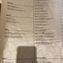

포폴로피자
4.6
View : 223,646 | Write : 209 | Pick : 4,329
| 주소 |
경기도 고양시 일산동구 정발산로 43-20 센트럴플라자 서울시 강남구 삼성동 58-6 |
| 전화번호 | 031-932-9337 |
| 음식 종류 | 이탈리안 |
| 가격대 | 만원-2만원 |
| 주차 | 무료주차 가능 |
| 영업시간 | 11:30 - 22:00 |
| 휴일 | 월 |
| 메뉴 |
라자냐 알라 볼로네제
16,800원 비스마르크 14,600원 꽈트로풍기 15,000원 마르게리타 11,600원  |
| 리뷰(209) |
전체 (209) | 맛있다 (150) | 괜찮다 (53) | 별로 (6) |
| 진꿀이 | 맛있게 한데 이렇게 유명할 일? 줄서서먹을 맛은 절대 아님둥...도우가 쫄깃쫄깃 진짜 맛있었고 가지가지 한국식 가지볶음 말고는 중국가지튀김부터 가지들어간 이태리 음식도 좋아해 맛있었던 가지요리 ㅋㅋ 우리가 시키고 딱 품절되어 더 좋았던^^ 나쁜마음 호수공원 산책하고 가기 좋을듯함 |
| 혼디 | 카프레제 샐러드 페스토파스타 비스마르크 다다다다 맛있땅 |
| 눈누난나 | 초심을 잃으신듯. 유명해지기 전부터 갔던 맛집이라 오랜만에 갔는데 너무 실망이에요. 피자바닥 다 태워나와서 이야기 했더니 사장이 " 다시 해드려요? 근데 다시해도 똑같이 나올 수 있어요".... 초기에 친절했던 사장도 음식맛과 같이 변했네요 피자도 짜 샐러드에 도우도 짜. 소금 덩어리에 스파게티는 설탕 덩어리 ㅋ |